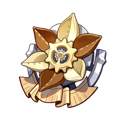
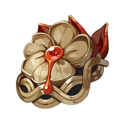

Aptitudes actives

Quiétude de l’eau
Attaque normale Agite légèrement sa canne, ordonnant aux marées de déclencher jusqu’à 3 attaques qui infligent des DGT Hydro. Charge d’attaque chargée : Avertissement procédural Pendant la charge, Neuvillette concentre la puissance de l’eau en un sceau d’arbitrage. Dans cet état, Neuvillette peut se déplacer, changer d’orientation et absorber les gouttes d’eau de source à portée. Chaque goutte absorbée permet d’augmenter la vitesse du sceau d’arbitrage et soigne les PV de Neuvillette selon ses PV max. À la fin de la charge, Neuvillette déclenche une attaque chargée si le sceau d’arbitrage est incomplet. Si ce dernier est complet, il déclenche une attaque chargée « Jugement équitable ». Attaque chargée Consomme de l’endurance pour attaquer les ennemis avec un cercle d’eau qui inflige des DGT Hydro de zone. Attaque chargée : Jugement équitable Neuvillette libère un torrent déferlant qui inflige des DGT Hydro de zone de façon continue aux ennemis en ligne droite devant lui. Le jugement équitable ne consomme pas l’endurance et dure X s. Lorsque ses PV sont supérieurs à 50 %, Neuvillette perd des PV de façon continue en utilisant cette attaque. Attaque plongeante Concentre la puissance de l’élément Hydro avant de plonger depuis les airs pour frapper le sol, infligeant des DGT aux ennemis sur la route et des DGT Hydro de zone à l’impact.

Ô larmes, je rembourse
Neuvillette invoque une cascade déchaînée qui inflige des DGT Hydro de zone aux ennemis en face de lui. Après avoir touché un ennemi, 3 gouttes d’eau de source sont générées à proximité de ce dernier. Arkhe : Pneuma Régulièrement, après avoir invoqué une cascade déchaînée, une épine d’inhalation qui transperce les ennemis est libérée pour infliger des DGT Hydro chargés d’énergie pneuma.

Ô marées, je reviens
Neuvillette déchaîne une vague de rupture qui inflige des DGT Hydro de zone selon ses PV max. Après un court délai, 2 cascades sont invoquées pour infliger des DGT Hydro sur une petite zone et générer 6 gouttes d’eau de source en avant.
Team comp
L'équipe Hypercarry Neuvillette se concentrent sur l'amélioration de ses dégâts personnels. L'équipe Hypercarry évoluent bien avec les Constellations et l'investissement dans Neuvillette.
L'équipe Neuvillette Hyperbloom utilisent son application Hydro sur le terrain ce synchornise avec l'application Dendro hors terrain pour déclencher des Blooms puis des Hyperblooms avec une unité Electro pour un bon mélange de dégâts de zone et de dégâts sur une seule cible.

Il peut être difficile de contrôler qui finit par vaporiser Neuvi et Xiangling – une fois qu'un des personnages prend la priorité, aucun d'eux ne peut dépasser l'autre – mais cela n'a pas d'importance car l'équipe finit par faire les mêmes dégâts de toute façon ! Une option décente avec AoE sur ses deux principaux donneurs de dégâts, bien que le Burst de Xiangling obligeant Neuvillette à jouer en mêlée annulent les avantages de sa portée et rendent la résistance aux interruptions beaucoup plus précieuse.
Artefact
-

Meilleur set et de très loin pour Neuvillette, son kit jouant sur les PV, les attaques normales et chargées. Ce set permet aussi une plus grande liberté sur le choix d'artéfact car il donne énormement de Crit rate.
2ème meilleur choix après le marchaussée
Bonne alternative si vous n'avez ni le premier choix ni le deuxième